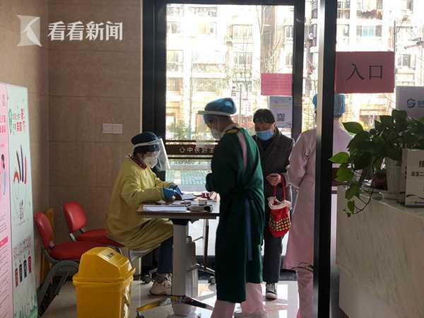
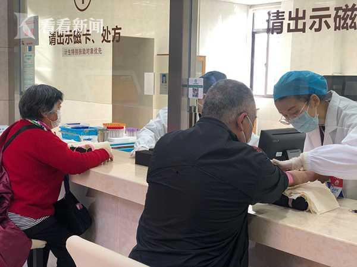

自3月11日起，奉贤区的60周岁以上老年人健康体检工作在奉浦街道社区卫生服务中心已率先开展。
考虑到目前还处于疫情期间，为了居民的安全，该中心以家庭医生签约为主，
实行“家庭医生签约一人、管理一人”预约制分流体检。实行2周以来，老百姓体检热情高，反响不错。
这周一早上7点半，在奉贤区奉浦街道社区卫生服务中心的一楼等待大厅，已经聚集了不少前来体检的老人们，他们手中拿着体检报告和号码牌，有序地分开就座，等待叫号。
家住在附近小区的庄阿婆上周五就已经完成了第一次体检，今天她按照家庭医生吩咐，
空腹来做血常规、B超等项目。她告诉记者，以前体检人流量非常大，今年有了这个疫情，大家都按照流程排队来，人少了，方便了。
看着疫情好转，退休了好几年的市民胡国兴主动联系起了家庭医生，没想到正好预约到了今天体检。
他忍不住感慨如今的方便，“现在预约体检，每天限人流，真的比以前好的多了。”另一边正在等待血常规检测的陈先生则表示与去年相比，今年虽然在疫情期间，但是这里的体检流程让他非常满意。
“其实这段时间，家庭医生在门诊诊疗中发现居民对健康体检的需求是很多的，所以我们现在每天限流30号人来体检。”奉浦街道社区卫生服务中心副主任顾晓青告诉记者，除了预约制分流体检，中心将体检分为A、B档。A档为第一天来体检的居民，由家庭医生负责查体、症状问询、一般状况等无需空腹检查的体检项目，然后再由家庭医生为居民预约第2次B档体检时间。居民体检完毕后，3周后可到家庭医生处领取体检报告。